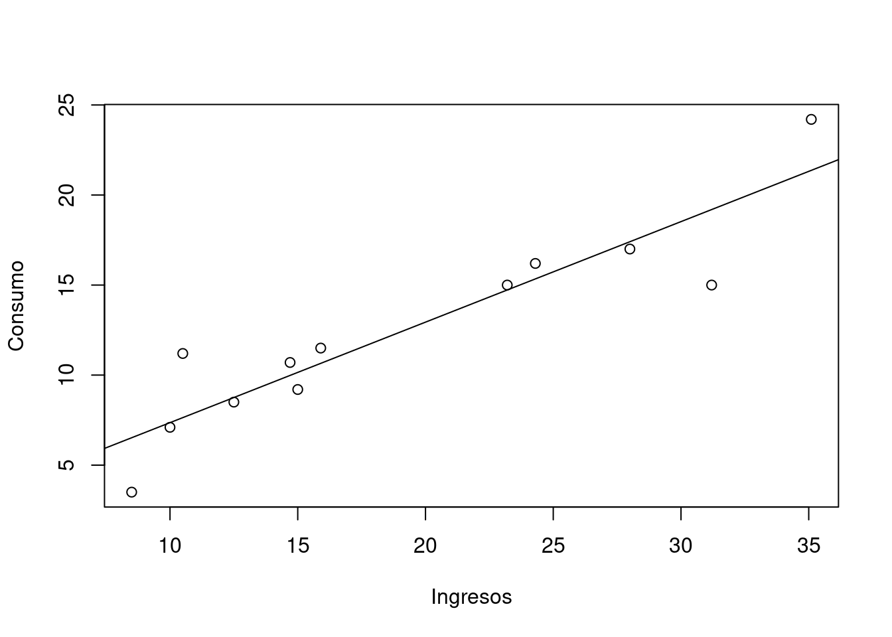

Con el fin de estimar la relación que exite entre el nivel de ingresos de una persona y el nivel de consumo , un investigador recolectó la siguiente información:
| id | 1 | 2 | 3 | 4 | 5 | 6 | 7 | 8 | 9 | 10 | 11 | 12 |
|---|---|---|---|---|---|---|---|---|---|---|---|---|
| Ing | 24.3 | 12.5 | 31.2 | 28.0 | 35.1 | 10.5 | 23.2 | 10.0 | 835 | 15.9 | 14.7 | 15.0 |
| Con | 16.2 | 8.5 | 15.0 | 17.0 | 24.2 | 11.2 | 15.0 | 7.1 | 3.5 | 11.5 | 10.7 | 9.2 |
Donde : + Id: identificador del hogar + Ing : Ingresos familiares + Con : Consumo en viveres
Realice un analisis de regresión que permita estimar la relación entre el consumo (Con) y los ingresos familiares (Ing).
| id | x | y | x2 | y2 | xy |
|---|---|---|---|---|---|
| 1 | 23.4 | 16.2 | 547.56 | 262.44 | 393.66 |
| 2 | 12.5 | 8.5 | 156.25 | 72.25 | 106.25 |
| 3 | 31.2 | 15.0 | 973.44 | 225.00 | 468.00 |
| 4 | 28.0 | 17.0 | 784.00 | 289.00 | 476.00 |
| 5 | 35.1 | 24.2 | 1232.01 | 585.64 | 849.42 |
| 6 | 10.5 | 11.2 | 110.25 | 125.44 | 117.60 |
| 7 | 23.2 | 15.0 | 538.24 | 225.00 | 348.00 |
| 8 | 10.0 | 7.1 | 100.00 | 50.41 | 71.00 |
| 9 | 8.5 | 3.5 | 72.25 | 12.25 | 29.75 |
| 10 | 15.9 | 11.5 | 252.81 | 132.25 | 182.85 |
| 11 | 14.7 | 10.7 | 216.09 | 114.49 | 157.29 |
| 12 | 15.0 | 9.2 | 225.00 | 84.64 | 138.00 |
| suma | 228.90 | 149.10 | 5250.83 | 2178.81 | 3337.82 |
Modelo de regresión lineal simple : \(Y_{i} = \beta_{0} + \beta_{1} X_{i} + u_{i}\)
Modelo estimado : $ = = + x_{i} = b_{0} + b_{1} x_{i}$
Residuales : \(e_{i} =\widehat{u_{i}} = y_{i} - \widehat{y_{i}}\)
Suma de cuadrados de los errores : \(SCE = \sum_{i=1}^{n} e^{2} = \sum_{i=1}^{n} (y_{i} - \widehat{y_{i}})^{2}\)
Método de Mínimos Cuadrados Ordinarios (MCO)
Objetivo : Encontrar los valores de \(\beta_{0}\) y \(\beta_{1}\) que minimecen la Suma de Cuadrado de los Erroeres (SCE).
Ecuaciones normales: Con el fin de estimar los valores de los coeficienes se plantean dos ecuaciones con dos incognitas. Estas ecuaciones se obtienen al derivar parcialmente la SCR con respecto a los dos coeficentes.
\[\dfrac{\partial SCE}{\partial \beta_{0}} = -2 \sum_{i=1}^{n}(y_{i}- \beta_{0}-\beta_{1} x_{i}) = 0 \]
\[\dfrac{\partial SCE}{\partial \beta_{1}} = -2 \sum_{i=1}^{n}(y_{i}- \beta_{0}-\beta_{1} x_{i}) x_{i} = 0\]
\[n \beta_{0} + \beta_{1} \sum_{i=1}^{n} x_{i} = \sum_{i=1}^{n} y_{i}\]
\[\beta_{0} \sum_{i=1}^{n} x_{i} + \beta_{1} \sum_{i=1}^{n} x_{1}^{2} = \sum_{i=1}^{n} x_{i}y_{i}\]
\[\begin{eqnarray*} b_{1} = \dfrac{n \displaystyle\sum_{i=1}^{n} x_{i}y_{i}- \Big(\displaystyle\sum_{i=1}^{n} x_{i} \displaystyle\sum_{i=1}^{n} y_{i}\Big)}{n \displaystyle\sum_{i=1}^{n} x_{i}^{2}- \Big(\displaystyle\sum_{i=1}^{n} x_{i}\Big)^{2}} \end{eqnarray*}\] \[\begin{equation*} b_{0}= \bar{y} - b_{1} \bar{x} \end{equation*}\]
\[\begin{equation*} \dfrac{149.10}{12}-0.55817 \dfrac{228.90}{12} = 1.77788 \end{equation*}\]
\[\begin{eqnarray*} S_{xx} = \displaystyle\sum_{i=1}^{n} (x_{i}- \bar{x})^{2} = \sum_{i=1}^{n} x_{i}^{2} - \dfrac{\Big(\displaystyle\sum_{i=1}^{n} x \Big)^{2}}{n} \end{eqnarray*}\]
\[\begin{equation*} S_{xx} = 5280.83-\dfrac{(228.90)^{2}}{12} = 884.5625 \end{equation*}\]
\[\begin{eqnarray*} S_{yy} = \displaystyle\sum_{i=1}^{n} (y_{i}- \bar{y})^{2} = \sum_{i=1}^{n} y_{i}^{2} - \dfrac{\Big(\displaystyle\sum_{i=1}^{n} y_{i} \Big)^{2}}{n} \end{eqnarray*}\]
\[\begin{equation*} S_{yy} = 2178.81-\dfrac{(149.0)^{2}}{12} = 326.2425 \end{equation*}\]
\[\begin{eqnarray*} S_{xy} = \displaystyle\sum_{i=1}^{n} (y_{i}- \bar{y})(x_{i}- \bar{x}) = \sum_{i=1}^{n} x_{i}y_{i} - \dfrac{\Big(\displaystyle\sum_{i=1}^{n} x_{i} \displaystyle\sum_{i=1}^{n} y_{i} \Big)}{n} \end{eqnarray*}\]
\[\begin{equation*} S_{xy} = 3337.82-\dfrac{228.90 \times 149.10}{12} = 493.7375 \end{equation*}\]
#### Suma de Cuadrados de los Errores
(Residuales)
\[\begin{eqnarray*} SCE =\s um_{i=1}^{n} u_{i}^{2}=\sum_{i=1}^{n} (y_{i}-\widehat{y_{i}})^{2}= S_{yy} - b_{1} S_{xy} \end{eqnarray*}\]
\[\begin{equation*} SCE = 326.2425 -0.55817 \times 493.7375 = 50.65304 \end{equation*}\]
\[\begin{equation*} s^{2} =\dfrac{SCE}{n-2} = \dfrac{Syy - b_{1} S_{xy}}{n-2} = %\dfrac{50.65304}{10}= 5.65304 \end{equation*}\] % \[\begin{eqnarray*} IC_{\beta_{1}} : b_{1} t_{v=n-2; \alpha/2} \dfrac{s}{\sqrt{S_{xx}}} \end{eqnarray*}\]
\[\begin{eqnarray*} T_{0} = \dfrac{b_{1}- \beta_{1o}}{s/\sqrt{S_{xx}}} \end{eqnarray*}\]
$H_{0}: {1}={2}=…_{k} = 0 $ \(H_{a}:\) algun \(\beta_{i}\) es diferente de cero
\(H_{0}: \beta_{0} = 0\) \(H_{a}: \beta_{0} \neq 0\)
Estadístico de prueba
\[\begin{eqnarray*} t=\dfrac{b_{0}-0}{s \sqrt{\dfrac{\displaystyle\sum_{i=1}^{n}x_{i}^{2}}{n S_{xx}}}} = \dfrac{1.77788-0}{\sqrt{5.065}\sqrt{\dfrac{5250.83}{12 \times 884.5625}}} = 1.123 \end{eqnarray*}\] Valor-p
2*pt(-1.123,11)## [1] 0.2853501\(H_{0}: \beta_{1} = 0\) \(H_{a}: \beta_{1} \neq 0\)
Estadistico de prueba:
\[\begin{eqnarray*} t=\dfrac{b_{1}-0}{\dfrac{s}{\sqrt{S_{xx}}}} = \dfrac{0.55817}{\sqrt{5.0652/884.5625}} = 7.376 \end{eqnarray*}\]
2*pt(-7.376,11)## [1] 1.401564e-05\[\begin{eqnarray*} \widehat{y_{0}} \pm t_{\alpha/2} s \sqrt{\dfrac{1}{n} \dfrac{(x_{0}-\bar{x})^{2}}{S_{xx}}} \end{eqnarray*}\] \(v=n-k\) grados de libertad
\[\begin{eqnarray*} \widehat{y_{0}} \pm t_{\alpha/2} s \sqrt{1+\dfrac{1}{n} \dfrac{(x_{0}-\bar{x})^{2}}{S_{xx}}}} \end{eqnarray*}\]
\(v=n-k\) grados de libertad
x=c(24.3,12.5,31.2,28,35.1,10.5,23.2, 10,8.5,15.9,14.7,15)
y=c(16.2,8.5,15,17,24.2,11.2,15,7.1,3.5,11.5,10.7,9.2)
regresion=lm(y ~ x)
summary(regresion)##
## Call:
## lm(formula = y ~ x)
##
## Residuals:
## Min 1Q Median 3Q Max
## -4.1928 -0.5426 0.0088 0.8500 3.5613
##
## Coefficients:
## Estimate Std. Error t value Pr(>|t|)
## (Intercept) 1.77788 1.58292 1.123 0.288
## x 0.55817 0.07567 7.376 2.38e-05 ***
## ---
## Signif. codes: 0 '***' 0.001 '**' 0.01 '*' 0.05 '.' 0.1 ' ' 1
##
## Residual standard error: 2.251 on 10 degrees of freedom
## Multiple R-squared: 0.8447, Adjusted R-squared: 0.8292
## F-statistic: 54.41 on 1 and 10 DF, p-value: 2.38e-05plot(x,y, xlab = "Ingresos", ylab = "Consumo")
abline(regresion)
| Fuentes de variación | grados de libertad | Suma de Cuadrados | Cuadrados Medios | F | Valor-p |
|---|---|---|---|---|---|
| Regresión | \(k-1\) | \(b_{1} S_{xy}\) | \(\dfrac{SCReg}{(k-1)}\) | \(\dfrac{CMReg}{CMRes}\) | \(1-pf\) |
| \(2-1\) | 275.590 | 275.590 | \(\dfrac{275.590}{5.0652}=54.408\) | 0.0000 | |
| Residuales | \(n-k\) | \(S_{yy}-b_{1} S_{xy}\) | \(\dfrac{SCRes}{(n-k)}\) | ||
| \(12-1\) | 50.652 | 5.0652 | |||
| Total | \(n-1\) | \(S_{yy}\) | |||
| \(12-1\) | 326.2425 |
anova(regresion)## Analysis of Variance Table
##
## Response: y
## Df Sum Sq Mean Sq F value Pr(>F)
## x 1 275.590 275.590 54.408 2.38e-05 ***
## Residuals 10 50.652 5.065
## ---
## Signif. codes: 0 '***' 0.001 '**' 0.01 '*' 0.05 '.' 0.1 ' ' 1